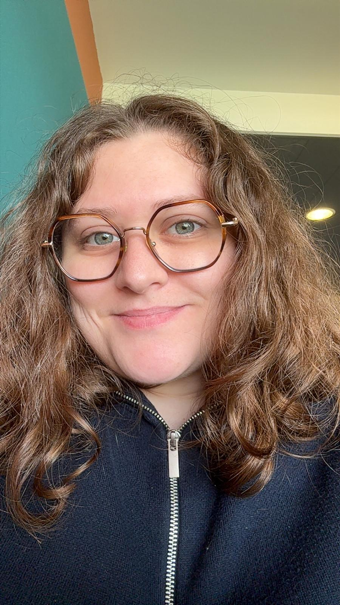

Étudiante en DEUST Webmaster à l'IUT de Calais, je me reconvertis vers le développement web et la création visuelle après un parcours en QHSE.
Mon parcours précédent m'a appris la rigueur, l'organisation et le suivi de projet. Je les mets aujourd'hui au service de la création de sites web et d'identités visuelles.
Je recherche une alternance dans la communication, le design graphique ou le développement web, sur la Côte d'Opale.